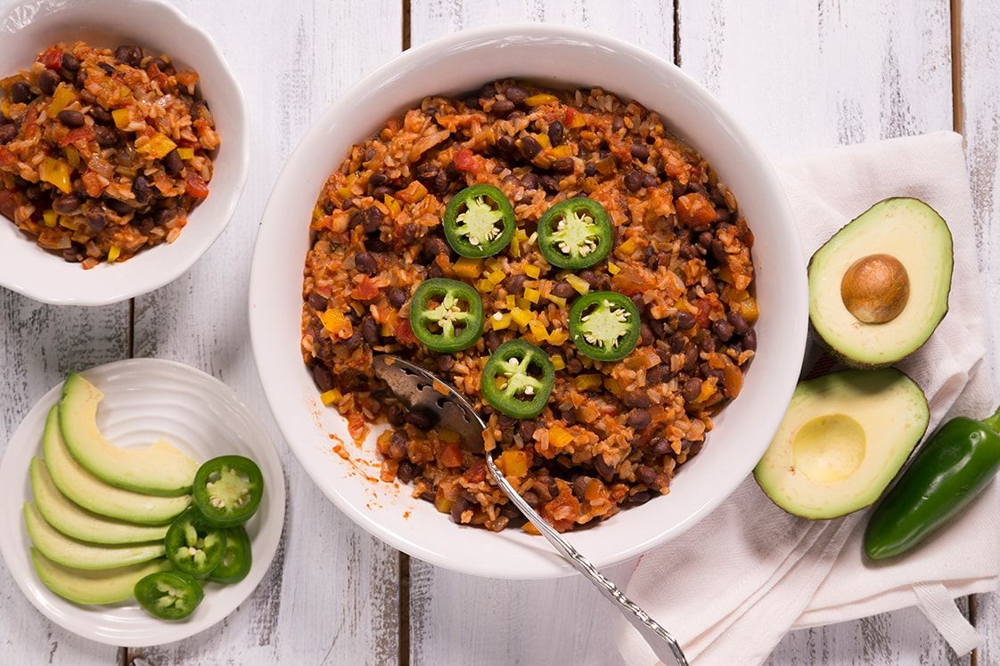

Mexican Brown Rice and Beans

Description
Simply bursting with flavor, this tomatoy,
super easy Mexican rice recipe is inspired by one of our favorite Mexican restaurant side dishes
In other words, this Mexican brown rice recipe is our very favorite combination of things!
Each and every grain of brown rice is seasoned with juicy tomato sauce and spicy taco seasoning
(that trusty homemade taco seasoning we’re always talking about, of course)
making for a big pot of goodness that’ll find all sorts of happy uses in your kitchen.
Stuff burritos with it, serve it alongside some crispy carnitas, or just eat it as-is—because we add black beans,
it’s basically a complete, one-pot vegan meal—for a quick, simple lunch.
If you really want to take things over the top, you could add some sliced avocado and garnish it with cilantro.
Ingredients
- 1 teaspoon olive oil
- 1/2 large Vidalia or other sweet onion, chopped
- 1/2 yellow bell pepper, chopped
- One half of a 15-oz can of black beans, rinsed and drained
- 2 cups prepared mild salsa
- 2 cups cooked brown rice
- 1/4 teaspoon cinnamon (if you are unsure about this ingredient, start with 1/8 teaspoon)
- 1/2 teaspoon cumin
- 1/2 teaspoon chili powder
- 1 teaspoon smoked paprika
Steps
- In a large nonstick saucepan, heat the olive oil over medium heat.
- Add the chopped onion and bell pepper, and sauté until softened, about 3-4 minutes.
- Add the garlic and sauté for 1 minute more.
- Add the salsa, black beans, and spices and let bubble for 2-3 minutes.
- Add the rice, reduce heat to medium-low, and heat through (about 5 minutes). The mixture should be moist but not runny.
- Add additional salsa (or just water) if needed.
- Remove from heat and finish with your choice of toppings (jalapeno, avocado, cheddar, hot sauce, etc.)